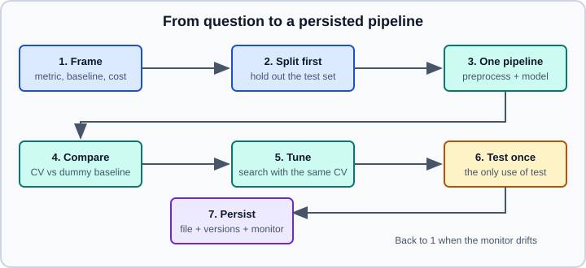

End-to-End ML Project
|
This content was generated with the assistance of AI and should be verified against the official documentation before being relied on in production. |
Most scikit-learn tutorials teach one tool at a time. A project is the order in which the tools are used, and most of the damage in practice comes from that order: a test set looked at too early, a preprocessing step fitted outside the pipeline, a metric chosen after the results. This page walks through one small project end to end, with every step a runnable listing, and explains why each step sits where it does.
Examples were run on Python 3.13 with scikit-learn 1.9.1, NumPy 2.5.4, pandas 3.1.0, SciPy 1.18.1 and FastAPI 0.162.0 on 2026-10-31.
The tools are explained elsewhere and only linked here: Getting Started, Pipelines, ColumnTransformer, Imputation, Categorical Encoding, Scaling & Transforming, Cross-Validation & Splitters, Hyperparameter Search, Metrics & Scoring, Common Pitfalls and Model Persistence and Security. The general project lifecycle is in Problem Framing & the ML Project Lifecycle, the workflow in the data-science section in the data science workflow, and the deployment of the saved model in Deploying & Serving ML Models.
The workflow

The seven stages, with the section that implements each:
-
Frame: what is predicted, from what, what error costs, which metric, which baseline. (The first section.)
-
Split first: put the test set aside before any exploration that could shape modelling choices. (Data and split.)
-
One pipeline: every learned preprocessing step lives in the model object, so it is fitted on training folds only. (Preprocessing.)
-
Compare: candidate models by cross-validation against a dummy baseline. (Compare.)
-
Tune: search hyperparameters with the same cross-validation. (Tune.)
-
Test once: one evaluation on the held-out data, reported whatever it says. (Evaluate.)
-
Persist and monitor: save the pipeline with the metadata needed to trust and reproduce it, and watch it after deployment. (Save, serve and monitor.)
Frame the problem
The project: predict the hourly demand for a bike-sharing service from the calendar (hour, weekday, month), the weather and the temperature, so that bikes can be redistributed in advance. The decisions that follow from the framing:
-
Task and target: regression of a non-negative count. A count could also be modelled with a Poisson loss; the example uses the squared error and reports the RMSE and the MAE.
-
Metric: RMSE penalises large misses, which hurt most when a station runs empty; MAE is easier to explain to operators. Both are reported, and the choice of the first is made before seeing results.
-
Baseline: a model that predicts the training mean (
DummyRegressor). Anything that does not clearly beat it is not a model. -
Evaluation scheme: demand is a time series and the model will be used on future dates, so the test set must be the most recent period and the cross-validation must respect time. A random split would put next hour’s rows in the training set and report an optimistic score. This is the "leakage through time" of the common-pitfalls page.
Writing these five lines before touching the data is the cheapest step of the project, and the one that is skipped most often. The same advice appears in the "Rules of Machine Learning" of Google’s engineering guide: start with a simple, observable metric and a simple baseline, and make the infrastructure (the pipeline from data to prediction) solid before adding model complexity.
Data and split
The data are synthetic so that the page needs no download and the true structure is known: two commuter peaks on weekdays, an afternoon peak at the weekend, a temperature effect, rain halving the demand, Poisson noise, and missing values in the temperature (3 per cent) and the weather (2 per cent). In a real project this step is loading a table; the rest is identical.
import numpy as np
import pandas as pd
rng = np.random.default_rng(0)
idx = pd.date_range("2024-01-01", periods=24 * 730, freq="h")
df = pd.DataFrame({"hour": idx.hour, "weekday": idx.day_of_week, "month": idx.month}, index=idx)
df["temp"] = 12 + 10 * np.sin(2 * np.pi * (idx.day_of_year - 110) / 365) + rng.normal(0, 3, len(idx))
df["humidity"] = np.clip(rng.normal(60, 15, len(idx)), 5, 100)
df["weather"] = rng.choice(["clear", "cloud", "rain"], len(idx), p=[0.5, 0.35, 0.15])
commute = np.exp(-0.5 * ((df.hour - 8) / 1.5) ** 2) + np.exp(-0.5 * ((df.hour - 18) / 1.5) ** 2)
leisure = np.exp(-0.5 * ((df.hour - 14) / 3) ** 2)
demand = 40 + 120 * commute * (df.weekday < 5) + 60 * leisure * (df.weekday >= 5)
demand = demand * (1 + 0.02 * (df.temp - 12)).clip(0.3) * np.where(df.weather == "rain", 0.5, 1)
df["demand"] = rng.poisson(demand.clip(1))
# real data has holes
df.loc[rng.random(len(df)) < 0.03, "temp"] = np.nan
df.loc[rng.random(len(df)) < 0.02, "weather"] = None
print(df.shape)
print(df.isna().mean().round(3).to_dict())
cut = idx[-24 * 90] # the last 90 days are the test set
train, test = df[df.index < cut], df[df.index >= cut]
X_train, y_train = train.drop(columns="demand"), train["demand"]
X_test, y_test = test.drop(columns="demand"), test["demand"]
print(len(train), len(test))(17520, 7)
{'hour': 0.0, 'weekday': 0.0, 'month': 0.0, 'temp': 0.03, 'humidity': 0.0, 'weather': 0.021, 'demand': 0.0}
15360 2160
The split is by date, not random: training covers the first 21 months and the test set the last 90 days (2,160 hours). From here on X_test and y_test are not used until the evaluation stage; exploratory plots, feature ideas and hyperparameter choices all come from X_train and y_train. With a table that is not a time series, train_test_split with stratify (classification) or a fixed random_state is the equivalent; see Train/Test Split.
Preprocessing as part of the model
The data need four treatments: missing temperatures and weather (impute), a categorical weather (encode), numeric features of different scales (scale, for linear models), and an hour of day that is circular (hour 23 is next to hour 0). A ColumnTransformer applies a different pipeline to each group of columns, and because it sits inside the model’s Pipeline, every statistic it learns (a median, the categories, the scaling) is learned from the training folds only.
Two preprocessors are built, because the two model families need different things:
-
For the linear model: the hour is expanded with a periodic
SplineTransformer(twelve B-spline bases on a circle of 24 hours, so hour 24 equals hour 0), the numbers are median-imputed and scaled, the categories are imputed with the most frequent value and one-hot encoded. -
For the tree model (
HistGradientBoostingRegressor): trees split on thresholds and handle raw integers and missing numbers natively, so only the weather needs imputing and encoding; the other columns pass through unchanged.
The reason to encode the cyclical hour is easy to state. A linear model given the raw hour can only draw a straight line through 0 to 23 and so cannot represent two peaks. A one-hot encoding can but loses that hour 7 is near hour 8, and the sine-cosine pair represents only one smooth cycle per period. Periodic splines are flexible, smooth and local. The scikit-learn gallery has an example, "Time-related feature engineering", that works on the OpenML bike-sharing data and compares several encodings of the calendar features, including the splines; read it for the comparison on real data. A tree-based model does not need any of this because it can isolate each hour with a few splits.
from sklearn.compose import ColumnTransformer
from sklearn.impute import SimpleImputer
from sklearn.pipeline import make_pipeline
from sklearn.preprocessing import OneHotEncoder, SplineTransformer, StandardScaler
weather = make_pipeline(SimpleImputer(strategy="most_frequent"),
OneHotEncoder(handle_unknown="ignore", sparse_output=False))
linear_prep = ColumnTransformer([
("hour", SplineTransformer(n_knots=13, knots=np.linspace(0, 24, 13).reshape(-1, 1),
degree=3, extrapolation="periodic"), ["hour"]),
("num", make_pipeline(SimpleImputer(strategy="median"), StandardScaler()), ["temp", "humidity"]),
("cat", make_pipeline(SimpleImputer(strategy="most_frequent"), OneHotEncoder(handle_unknown="ignore")),
["weather", "weekday"]),
])
tree_prep = ColumnTransformer([("weather", weather, ["weather"])], remainder="passthrough")Points to notice:
-
handle_unknown="ignore"makes an unseen category at serving time (a new weather label) encode as all zeros instead of raising an error. Decide deliberately: ignoring hides a data problem, raising stops the service. -
knotsis given explicitly so that the period of the spline is exactly 0 to 24; the default places knots uniformly between the minimum and maximum of the training data. -
remainder="passthrough"keeps the untouched numeric columns for the tree model. The default,"drop", would silently discard every column that is not named, a classic way to lose a feature without an error. -
Both preprocessors are objects, not fitted yet. Fitting happens inside cross-validation, per fold.
Compare candidates against a baseline
A Pipeline of preprocessor and model is one estimator; cross_validate clones and fits it on each training fold. TimeSeriesSplit makes every validation fold later than its training data, and, as the common-pitfalls page explains, plain KFold would not.
from sklearn.dummy import DummyRegressor
from sklearn.ensemble import HistGradientBoostingRegressor
from sklearn.linear_model import RidgeCV
from sklearn.model_selection import TimeSeriesSplit, cross_validate
models = {
"dummy": make_pipeline(linear_prep, DummyRegressor()),
"ridge": make_pipeline(linear_prep, RidgeCV(alphas=np.logspace(-3, 3, 13))),
"hgb": make_pipeline(tree_prep, HistGradientBoostingRegressor(random_state=0)),
}
cv = TimeSeriesSplit(n_splits=4)
for name, model in models.items():
res = cross_validate(model, X_train, y_train, cv=cv, scoring="neg_root_mean_squared_error")
rmse = -res["test_score"]
print(f"{name:6s} RMSE {rmse.mean():.2f} +- {rmse.std():.2f}")dummy RMSE 43.10 +- 5.07 ridge RMSE 24.47 +- 2.73 hgb RMSE 9.87 +- 1.28
(The fold scores use the neg_ sign convention, so the page negates them.) The baseline error of 43 is the spread of the demand itself. The regularised linear model with periodic splines halves it. Gradient boosting reduces it by a further factor of 2.5, because the demand depends on interactions (the commuting peaks only on weekdays, rain scaling everything) that an additive linear model cannot express without hand-made interaction features. The standard deviation across the four folds (about 1.3) is the size of difference that should not be read as a ranking between two candidates.
This is the stage to prefer the simpler model when two are close, and to look at the errors rather than only the summary: plot the residuals by hour, by weekday and by weather, and look for a group where the error is much larger.
Tune
Hyperparameters are searched with the same time-aware cross-validation. RandomizedSearchCV samples configurations from distributions, which usually covers a continuous parameter such as the learning rate better than a grid with the same budget. The parameter names address a step of the pipeline by its automatic name and the parameter after a double underscore.
from scipy.stats import loguniform, randint
from sklearn.model_selection import RandomizedSearchCV
search = RandomizedSearchCV(
models["hgb"],
{"histgradientboostingregressor__learning_rate": loguniform(0.02, 0.3),
"histgradientboostingregressor__max_leaf_nodes": randint(8, 64),
"histgradientboostingregressor__min_samples_leaf": randint(10, 200)},
n_iter=12, cv=cv, scoring="neg_root_mean_squared_error", random_state=0, n_jobs=1)
search.fit(X_train, y_train)
print(search.best_params_)
print("CV RMSE", round(-search.best_score_, 2)){'histgradientboostingregressor__learning_rate': np.float64(0.1082424986596979), 'histgradientboostingregressor__max_leaf_nodes': 58, 'histgradientboostingregressor__min_samples_leaf': 46}
CV RMSE 10.3
The tuned cross-validated RMSE, 10.3, is not better than the untuned 9.87 measured above. That is not a bug but a lesson: the search score is the best of 12 noisy estimates, the folds differ in size (the first fold trains on much less data than the last) and the default configuration was already good. Do not spend effort on tuning that the noise level cannot resolve; the model family and the features matter more. With refit=True (the default) the search refits the best configuration on the whole training set, and search.best_estimator_ is that fitted pipeline. For larger searches, early stopping and successive halving are covered in Hyperparameter Tuning at Scale.
Evaluate once
Only now is the test set used, once, with the metrics fixed in the framing, next to the baseline.
from sklearn.metrics import mean_absolute_error, root_mean_squared_error
best = search.best_estimator_
pred = best.predict(X_test)
print("test RMSE", round(root_mean_squared_error(y_test, pred), 2), "MAE", round(mean_absolute_error(y_test, pred), 2))
base = models["dummy"].fit(X_train, y_train).predict(X_test)
print("dummy test RMSE", round(root_mean_squared_error(y_test, base), 2))
err = pd.Series(np.abs(y_test - pred)).groupby(X_test["hour"].values).mean().round(1)
print(err.loc[[0, 8, 14, 18]].to_dict())test RMSE 8.42 MAE 6.35
dummy test RMSE 36.77
{0: 4.9, 8: 8.8, 14: 5.2, 18: 8.9}
Source: https://scikit-learn.org/stable/modules/generated/sklearn.metrics.root_mean_squared_error.html
The test RMSE (8.42) is in line with the cross-validated one (10.3), which is the check that matters: a large gap in either direction would point to leakage, to a drifting target or to a test period unlike the training one. The error by hour shows that the model is least accurate in the commuting peaks (hours 8 and 18), where the demand and the Poisson noise are largest, not at night. A real project would write this down for the operators with the dummy baseline next to it.
Two rules for this step. If the test result disappoints, do not go back to tune on it: that turns the test set into a second validation set and the next number is no longer an honest estimate. Either accept the result, or collect fresh data for a new test set. And do not retrain on train + test and report the test score of the earlier model as if it described the final one; retraining on all data for deployment is fine, but its score is the earlier estimate.
Save, serve and monitor
The object to save is the whole fitted pipeline, because the preprocessing is part of the model. Save it together with the information needed to know what it is. The scikit-learn guidance on persistence lists the metadata to keep: the versions of scikit-learn and its dependencies, the training script, a reference to an immutable snapshot of the training data and the cross-validation score, so that a rebuilt model can be compared with the original.
import json, os, platform, tempfile
import joblib
import sklearn
out = tempfile.mkdtemp()
joblib.dump(best, os.path.join(out, "demand-model.joblib"))
meta = {"sklearn": sklearn.__version__, "python": platform.python_version(),
"features": list(X_train.columns), "trained_until": str(cut.date()),
"test_rmse": round(float(root_mean_squared_error(y_test, pred)), 2)}
with open(os.path.join(out, "demand-model.json"), "w") as f:
json.dump(meta, f, indent=2)
print(meta)
loaded = joblib.load(os.path.join(out, "demand-model.joblib"))
print("identical predictions:", np.allclose(loaded.predict(X_test), pred))
# unseen category and missing value at serving time
new = X_test.iloc[:2].copy()
new["weather"] = ["snow", None]
new["temp"] = [np.nan, 3.0]
print(loaded.predict(new).round(1)){'sklearn': '1.9.1', 'python': '3.13.16', 'features': ['hour', 'weekday', 'month', 'temp', 'humidity', 'weather'], 'trained_until': '2025-10-02', 'test_rmse': 8.42}
identical predictions: True
[39.5 33.7]
The loaded pipeline reproduces the predictions exactly, and it handles a never-seen weather label and missing values, because the encoders and imputers were configured for it. In production the file would go to a model registry or an artifact store rather than a temporary directory. The main cautions, covered in detail on the persistence page:
-
A pickle or joblib file can run code when loaded. Load only files you produced; for files from other sources use
skops.io, or export to ONNX if only predictions are needed (see Exporting Pipelines to ONNX). -
There is no supported way to load a model into a different scikit-learn version: pin the versions, and treat an
InconsistentVersionWarningas an error in the serving code. Thesklearnentry of the metadata above is what the check compares against. -
Because the custom preprocessing here is made of standard transformers, the pickle is portable across machines with the same versions. A lambda inside a
FunctionTransformeris a frequent cause of pickling failures; see Building Custom Estimators & Transformers for the alternative of a named class.
A minimal serving endpoint with FastAPI (see FastAPI for the framework) loads the pipeline once at start-up and builds a one-row DataFrame per request, so that column names match what the pipeline was fitted on:
from contextlib import asynccontextmanager
import joblib
import pandas as pd
from fastapi import FastAPI
from pydantic import BaseModel
state = {}
@asynccontextmanager
async def lifespan(app: FastAPI):
state["model"] = joblib.load("demand-model.joblib")
yield
state.clear()
app = FastAPI(lifespan=lifespan)
class Query(BaseModel):
hour: int
weekday: int
month: int
temp: float | None = None
humidity: float
weather: str | None = None
@app.post("/predict")
def predict(q: Query) -> dict:
row = pd.DataFrame([q.model_dump()])
return {"demand": float(state["model"].predict(row)[0])}Exercised with FastAPI’s TestClient (which needs httpx), the endpoint answered status 200 for test rows and for a row with an unseen weather label and no temperature, for example {"demand": 165.4} for 08:00 on a Tuesday in May with "weather": "snow".
Monitoring is the part a notebook never shows. Log the inputs and predictions, compare the distribution of each feature and of the error with those of the training period (a change in the temperature distribution, a new weather label, a shift in the share of missing values), and recompute the metric when the true demand becomes known. Retrain on a schedule or when the monitored error crosses a threshold, with the same pipeline code and the same evaluation scheme. The tooling for tracking runs and metrics is in Experiment Tracking & MLOps, and the reproducibility basics in Reproducibility & MLOps Basics.
Checklist and common mistakes
-
Test set looked at early. Split first; do exploration on the training part.
-
Preprocessing outside the pipeline. Fitting an imputer, scaler or encoder on all the data before splitting leaks the test distribution. Use
PipelineandColumnTransformer. -
Random split of time-ordered data. Use a date cut and
TimeSeriesSplit; useGroupKFoldwhen rows of the same entity must stay together. -
No baseline. A
DummyRegressororDummyClassifiercosts one line and calibrates every other number. -
A metric chosen after the results. Decide it in the framing.
-
Tuning on the test set. One test evaluation; if it is spent, collect new data.
-
Silently dropped columns. Use
remainder="passthrough"deliberately and checkget_feature_names_out(). -
Unseen categories and missing values in production. Configure
handle_unknownand the imputers, and test the loaded model with such rows, as above. -
A pickle without its context. Store versions, features, data reference and score with the file.
-
No monitoring. A model is only as good as the data it still resembles.
What is outdated
Compared with older books and tutorials:
-
Tutorials written before scikit-learn 1.2 use
OneHotEncoder(sparse=False); the argument issparse_outputnow. The same applies tomean_squared_error(..., squared=False), which was superseded byroot_mean_squared_error(added in 1.4). -
The Boston housing dataset used in many older projects was removed in 1.2 because of ethical concerns about one of its features; the California housing dataset or any table of your own replaces it. The structure of this page (frame the problem, get the data, split, prepare with pipelines, select and tune, present, launch and monitor) follows the usual outline of the end-to-end chapter of Aurélien Géron’s Hands-On Machine Learning with Scikit-Learn and PyTorch (2025), which was used as a structural reference only; its datasets and code are not reproduced.
-
Many tutorials fit transformers by hand and apply them to the test set. A
Pipelineremoves that step and the leakage it invites. -
Imputer(removed long ago) becameSimpleImputer, and categorical handling moved fromLabelBinarizerhacks toOneHotEncoderandOrdinalEncoderinside aColumnTransformer.